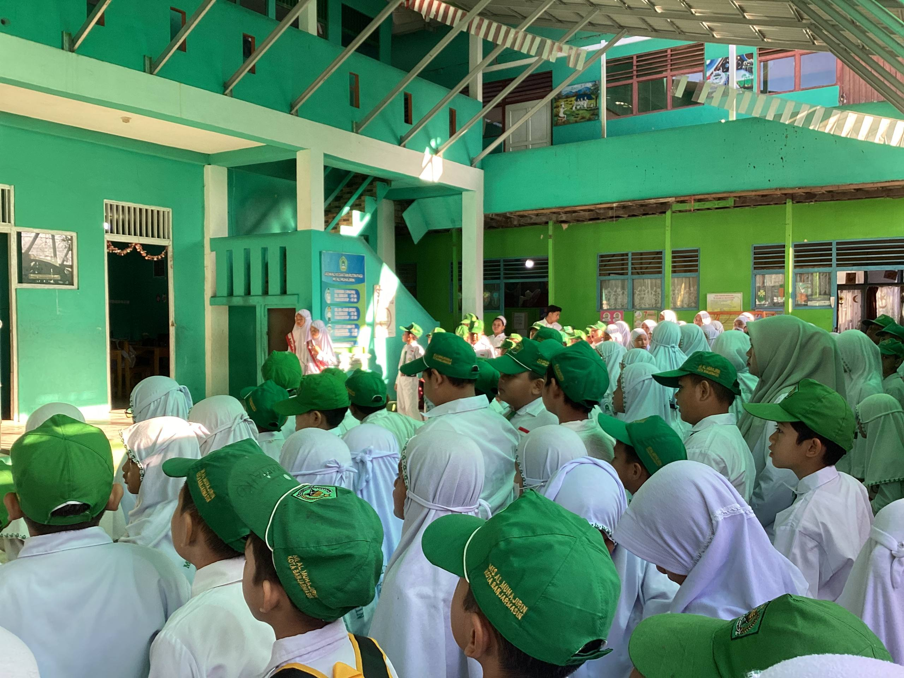

MIS Al Muhajirin — Pada Senin, 03 Agustus 2026, MIS Al Muhajirin melaksanakan kegiatan upacara bendera yang diikuti oleh peserta didik, guru, dan tenaga kependidikan.
Kegiatan upacara merupakan salah satu bentuk pembiasaan yang dilaksanakan untuk menumbuhkan kedisiplinan, tanggung jawab, serta sikap tertib dalam diri peserta didik.
Petugas Upacara
Pada pelaksanaan upacara kali ini, petugas upacara berasal dari kelas IV A.
Sementara itu, pembina upacara adalah Ibu Wartini, S.Ag.
Kegiatan upacara menjadi bagian dari pembiasaan kedisiplinan, tanggung jawab, dan pembentukan karakter peserta didik.
Pembiasaan Karakter Peserta Didik
Melalui pelaksanaan upacara, peserta didik memperoleh kesempatan untuk belajar menjalankan tugas, mengikuti kegiatan dengan tertib, serta membangun rasa tanggung jawab.
Kegiatan berlangsung dengan tertib dan menjadi bagian dari aktivitas pendidikan di lingkungan MIS Al Muhajirin.


Dokumentasi kegiatan ini menjadi bagian dari informasi aktivitas dan kegiatan peserta didik MIS Al Muhajirin.